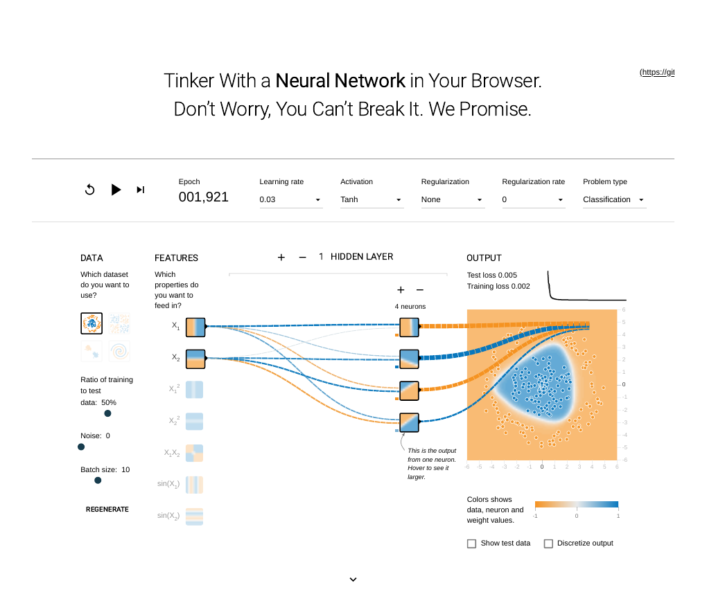
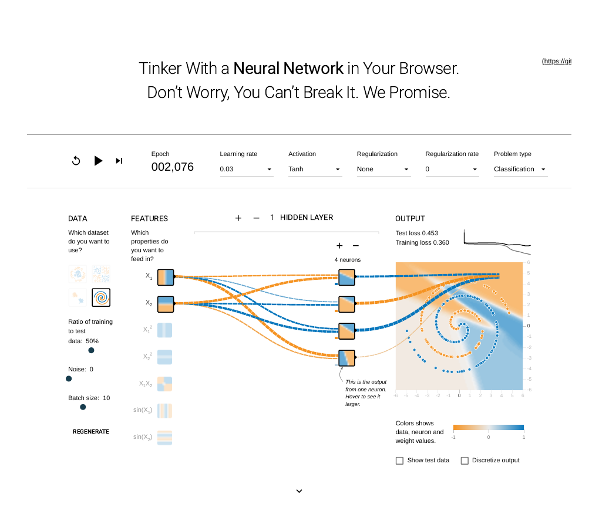
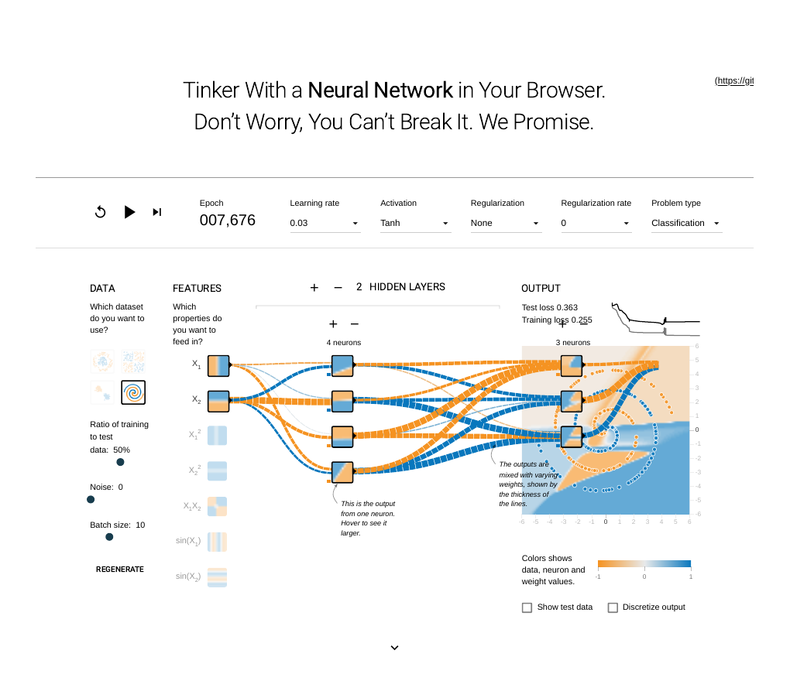

Artifact 2 · AIML-501 Workshop Two · Structure, training, and what the Playground teaches
Neural networks are often described as black boxes: data goes in, predictions come out, and what happens in between is left to mathematics. This artifact opens that box. Using the TensorFlow Neural Network Playground, I trained small networks on visible datasets and watched, epoch by epoch, how architecture choices change the decision boundary, the training loss, and the test loss. The result is a visual explanation of what each component of a neural network actually does.
The artifact has three parts. First, a diagram of a feedforward network's architecture, showing data flowing from the input layer through hidden layers to the output layer, with the training loop (loss, backpropagation, optimization) drawn as a return path. Second, plain-English definitions of the six core components: layers, neurons, weights, activation functions, loss functions, and optimization algorithms. Third, six first-hand Playground experiments with the exact settings and losses observed on screen, plus screenshots of three decisive states. This artifact deliberately covers a different aspect of expertise than Artifact 1: where Artifact 1 classifies which algorithm to choose, this one explains how a neural network learns.
Reading the diagram: forward pass moves left to right (blue arrows). Each connection carries a weight; each hidden neuron applies an activation function. The dashed return path is training: the loss measures the error, backpropagation assigns blame to each weight, and the optimizer updates them. Training repeats this loop for many epochs until the loss stops improving.
Role — Layers organize the network into stages. The input layer passes data in without computing; hidden layers transform it, each one learning more abstract features than the last; the output layer produces the prediction. Depth (more hidden layers) buys expressive power: in my experiments, a one-hidden-layer network could not trace a spiral at all, while a deeper one began to follow its arms.
Role — A neuron is a small computing unit: it takes a weighted sum of its inputs, adds a bias, and passes the result through an activation function. A single neuron draws one straight boundary; a layer of neurons combines many such boundaries into curves, blobs, and eventually the spiral arms seen in the Playground output.
Role — Weights are the network's memory. They set how strongly each input influences each neuron, and training is the process of adjusting them. In the Playground, connections are drawn thicker and darker as their weights grow, so you can literally watch the network decide which inputs to trust.
Role — Without a nonlinear activation, stacked layers collapse into a single linear model, no matter how deep the network is. Tanh squashes values to (−1, 1); ReLU passes positive values unchanged and zeroes the rest, which trains fast; Sigmoid squashes to (0, 1) but learns slowly at the extremes. On the circle task all three eventually succeeded, but ReLU started fastest and Sigmoid slowest.
Role — The loss function scores the network's predictions against the truth: mean squared error for regression, cross-entropy for classification. Every number in the experiments below is a loss value. When the circle model's test loss reached 0.005, the boundary visibly matched the data; when the small spiral model's test loss stuck near 0.45, the boundary was visibly wrong. Loss is the one number that tells you whether learning is happening.
Role — The optimizer decides how weights move in response to the loss gradient. Plain gradient descent steps downhill by a fixed learning rate: too large and training diverges, too small and it crawls. All experiments below used learning rate 0.03 with batch size 10; Adam, the common practical default, adapts the step size per weight and usually converges faster and more stably.
Common settings unless noted: learning rate 0.03, batch size 10, 50% training / 50% test data, classification, no regularization. Loss values are exactly as shown on screen; the Playground does not report accuracy.
| Experiment | Settings | Observed result |
|---|---|---|
| 1. Circle, small network | Circle, X₁+X₂, Tanh, 1 hidden layer (4 neurons), noise 0 | Epoch 1,921: test loss 0.005, training loss 0.002. Smooth rounded-triangular blue center cleanly separated from the orange ring. |
| 2. Spiral, same small network | Spiral, X₁+X₂, Tanh, 1 hidden layer (4 neurons), noise 0 | Epoch 2,076: test loss 0.453, training loss 0.360. Only broad straight/diagonal bands; the boundary did not follow the spiral arms. |
| 3. Spiral, bigger network | Spiral, X₁+X₂, Tanh, 2 hidden layers (4, 3 neurons), noise 0 | Epoch 7,676: test loss 0.363, training loss 0.255 (plateau). Boundary more curved and wedge-like, following part of the spiral, but large arm sections still misclassified. Both losses stayed high: underfitting, not overfitting. |
| 4. Circle with noise | Circle, X₁+X₂, Tanh, 1 hidden layer (4 neurons), noise 20 | Epoch 4,138: test loss 0.106, training loss 0.083, roughly 10× the clean-circle losses. Boundary still a central blob but fuzzier, with points intermixed near the edge. Train and test losses stayed close: noisy data, not an overfitting split. |
| 5. Activation functions | Circle, 1 hidden layer (4 neurons), noise 0 | Tanh (epoch 1,921): test 0.005, training 0.002. ReLU (epoch 1,999): test 0.016, training 0.000, diamond-shaped boundary, fastest early progress. Sigmoid (epoch 2,024): test 0.009, training 0.006, slowest start but caught up. All three solved the clean circle by ~2,000 epochs. |
| 6. Engineered features | Spiral, Tanh, 1 hidden layer (4 neurons), noise 0, inputs X₁, X₂, sin(X₁), sin(X₂) | Epoch 2,409: test loss 0.100, training loss 0.072, a dramatic improvement over the same small network without those features (test 0.453). Curved spiral-like arms emerged. Lesson: the right features can matter more than a bigger network. |



Watching a network learn turns abstract failure modes into visible ones. Underfitting looks like a boundary that never bends to fit the data (the small spiral network). Noise looks like a boundary that stays fuzzy no matter how long training runs. Overfitting, notably, never appeared in my runs: even the widest train-test gap I saw (ReLU on circle, 0.000 vs 0.016) was small, a reminder that overfitting is a diagnosis you check with held-out data, not something to assume from model size alone. The deepest lesson is the last experiment: adding sin(X₁) and sin(X₂) as features improved the spiral result more than doubling the network did. Architecture matters, but representation matters more, and you only learn that by seeing both fail and succeed side by side. That is why visualization belongs in a practitioner's toolkit, not just a textbook: it makes the model's behavior checkable before its predictions are trusted.
I started in the Neural Network Playground with its default configuration and changed one variable at a time: dataset (circle, spiral), network size (one vs two hidden layers), noise level (0 vs 20), activation function (Tanh, ReLU, Sigmoid), and input features (adding sine transforms). Each run trained to a plateau of roughly 2,000 epochs (7,676 for the deep spiral run) before I recorded losses and captured the state. I then wrote the component explanations from the course materials, built the architecture diagram to match the Playground's own layout (inputs left, hidden layers center, output right, training loop returning), and assembled this page as the second artifact in the portfolio.
TensorFlow Neural Network Playground (in-browser interactive training), HTML/CSS with inline SVG for the architecture diagram, and GitHub Pages for portfolio hosting.
Artifact 1 showed I can choose the right algorithm; this artifact shows I can explain how a neural network learns and diagnose why it fails. For an engineer, that second skill is what turns a model from a demo into a system you can debug: reading a loss curve, recognizing underfitting on sight, and knowing when the fix is better features rather than a bigger network.
| TensorFlow Neural Network Playground. https://playground.tensorflow.org/ |
| Nielsen, M. Neural Networks and Deep Learning. http://neuralnetworksanddeeplearning.com/ |
| Goodfellow, I., Bengio, Y., & Courville, A. Deep Learning. https://www.deeplearningbook.org/ |
All loss values and screenshots are from the author's own Playground sessions, October 26, 2026. Playground page prints were cropped to the interactive area; no values were altered.